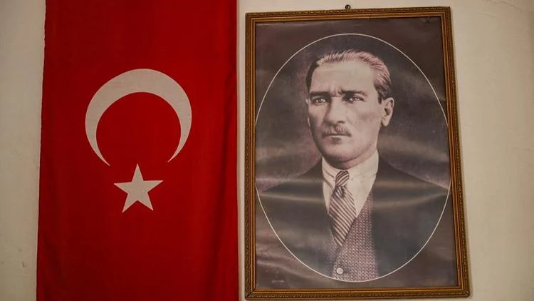

Mustafa naît en 1881 à Salonique, ville ottomane des Balkans, dans la famille d'un petit fonctionnaire. Il choisit très tôt la carrière militaire, entre à l'Académie de guerre d'Istanbul et en sort capitaine en 1905. Proche des cercles Jeunes-Turcs, il n'appartient pourtant pas au premier cercle du pouvoir : il se heurte à Enver Pacha, l'un des maîtres de l'Empire, et reste souvent écarté du commandement. Il se bat en Libye contre l'Italie (1911), puis dans les guerres balkaniques.
La Première Guerre mondiale le révèle. En 1915, à la tête d'une division, il arrête le débarquement allié sur la péninsule de Gallipoli, aux Dardanelles : ce succès le rend célèbre. Mais l'armistice de Moudros, le 30 octobre 1918, livre l'Empire aux vainqueurs, et en mars 1920 les Alliés occupent Istanbul.
« Yurtta sulh, cihanda sulh. » Paix dans le pays, paix dans le monde.
MUSTAFA KEMAL ATATÜRK, 20 AVRIL 1931, FORMULE RÉSUMANT LA POLITIQUE DU PARTI RÉPUBLICAIN DU PEUPLE
Le 19 mai 1919, Mustafa Kemal débarque à Samsun, officiellement pour rétablir l'ordre. Quatre jours plus tôt, l'armée grecque a occupé Smyrne avec l'accord des Alliés. Il rompt avec le sultan, réunit les congrès d'Erzurum et de Sivas, et fait de l'Anatolie le centre d'un pouvoir rival : le 23 avril 1920 s'ouvre à Ankara la Grande Assemblée nationale de Turquie, qui l'élit président.
Le traité de Sèvres (10 août 1920), signé par le sultan, démembre l'Empire. Les armées kémalistes l'emportent à Sakarya en 1921, puis reprennent Smyrne en septembre 1922. Le traité de Lausanne (24 juillet 1923) fixe les frontières de la Turquie actuelle et organise un échange de populations : environ 1,2 million d'orthodoxes d'Anatolie contre environ 400 000 musulmans de Grèce.
SÈVRES N'EST JAMAIS ENTRÉ EN VIGUEUR. DÉTROITS DÉMILITARISÉS À LAUSANNE, PUIS RÉARMÉS APRÈS LA CONVENTION DE MONTREUX (1936).
Vainqueur, Mustafa Kemal ferme l'ère ottomane en trois étapes. Le 1er novembre 1922, l'Assemblée d'Ankara abolit le sultanat. Le 29 octobre 1923, elle proclame la République : Ankara est la capitale et il en est le premier président, réélu en 1927, 1931 et 1935. Le 3 mars 1924, elle abolit le califat, titre religieux que les sultans ottomans portaient depuis 1517 ; la dynastie est exilée, les écoles religieuses sont fermées et placées sous une éducation unifiée.
La République n'est pas pour autant une démocratie pluraliste. Son parti, le Parti républicain du peuple (CHP), reste seul en lice : la révolte kurde et religieuse du cheikh Saïd (1925) est suivie de tribunaux d'exception, et l'essai d'un second parti, en 1930, est vite refermé.
De 1924 à 1938, l'État veut changer la société entière, et vite. En 1925, le chapeau remplace le fez, symbole de l'ordre ancien. En 1926, un code civil copié du code suisse interdit la polygamie et ne reconnaît que le mariage civil. En 1928, l'islam cesse d'être religion d'État et l'alphabet latin remplace l'alphabet arabe. En 1934, les femmes obtiennent le droit de vote et d'éligibilité, et chaque Turc reçoit un nom de famille : l'Assemblée donne à Mustafa Kemal celui d'Atatürk, « père des Turcs ».
Cette laïcité n'est pas une séparation : l'État place la religion sous son contrôle, avec une direction des affaires religieuses (Diyanet) créée en 1924. Les principes de cette politique sont inscrits dans la Constitution en 1937.
Atatürk meurt en 1938, mais la politique turque se définit encore par rapport à lui : certains le sacralisent, d'autres le contestent, d'autres encore en font l'histoire d'un pouvoir autoritaire.
En quinze ans, Mustafa Kemal a fait d'un empire vaincu un État-nation reconnu, doté d'une capitale, d'un droit et d'une langue nouveaux. Cette réussite tient à la méthode : une modernisation voulue d'en haut, par une élite militaire et un parti unique, plus soucieuse de transformer la société que de la consulter. Elle a donné aux femmes leurs droits, mais elle s'est payée de répressions, notamment contre les Kurdes.
C'est pourquoi son héritage reste ouvert. Se dire kémaliste, c'est défendre un État laïc, national et centralisé ; s'en démarquer, c'est souvent réclamer plus de place pour la religion et pour le pluralisme. Depuis 2002, l'AKP et l'opposition kémaliste du CHP se disputent ainsi moins un programme qu'une mémoire. Qui contrôle l'image d'Atatürk contrôle le récit de l'État turc, et c'est pourquoi ce débat ne se clôt jamais.
Le 1er novembre 1928, l'Assemblée d'Ankara adopte la loi qui remplace l'alphabet arabe par l'alphabet latin : en quelques mois, des millions de Turcs doivent réapprendre à lire et à écrire. Peut-on moderniser une société par décret, et à quel prix pour la liberté ?
Atatürk a bâti la Turquie moderne par le haut : une révolution laïque, nationale et autoritaire, dont l'héritage reste l'enjeu central de la vie politique turque.